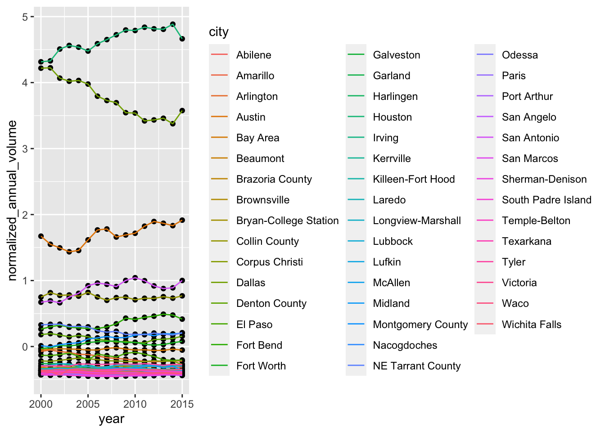

name <- function(args) {
# body
do something (probably with args)
}Module 9: Writing Functions
In this lesson we explore how to write our own functions to minimize repeated code and create simulation models.
Writing Functions
Download a copy of Module 9 slides
Lab 9
General Guidelines:
You will encounter a few functions we did not cover in the lecture video. This will give you some practice on how to use a new function for the first time. You can try following steps:
- Start by typing
?new_functionin your Console to open up the help page - Read the help page of this new_function. The description might be too technical for now. That’s OK. Pay attention to the Usage and Arguments, especially the argument
xorx,y(when two arguments are required) - At the bottom of the help page, there are a few examples. Run the first few lines to see how it works
- Apply it in your lab questions
It is highly likely that you will encounter error messages while doing this lab Here are a few steps that might help get you through it.
- Locate which line is causing this error first
- Check if you may have a typo in the code. Sometimes another person can spot a typo faster than you.
- If you enter the code without any typo, try googling the error message
- Scroll through the top few links see if any of them helps
- Try working on the next few questions while waiting for answers by TAs
Questions
Recall a function has the following form
- Write a function called calc_quadratic that takes an input
xand calculates \(f(x) = x^2 + 2x + 1\). For example:
calc_quadratic(5)[1] 36- What are the arguments to your function? What is the body of the function?
- This function is vectorized! (Since binary operators are vectorized). Show this is true by running
calc_quadraticwith an input vector that is-10 to 10.
- You realize you want to be able to work with any quadratic. Update your functions so that it can work with any quadratic in standard form \(f(x) = ax^2 + bx + c\).
- Your new function will take arguments
x, a, bandc. - Set the default arguments to
a=1, b=2andc=1.
- Write a function called solve_quadratic that takes arguments a, b and c and provides the two roots using the quadratic formula.
In our outline, we suggest you:
- Calculate the determinant \(\sqrt{b^2 − 4ac}\) and store as an intermediate value.
- Return two values by putting them in a vector. If you stored the roots as
root_1androot_2, then the final line of code in the function should bec(root_1, root_2)or, if you prefer, return(c(root_1, root_2)).
# fill in the ... with appropriate code
solve_quadratic <- function(...){
determinant <- ...
root_1 <- ...
root_2 <- ...
c(root_1, root_2)
}The code should work as follows:
solve_quadratic(a = -4, b = 0, c = 1)[1] -0.5 0.5- We “normalize” a variable by subtracting the mean and dividing by the standard deviation \(\frac{x - \mu}{\sigma}\) .
Write a function called normalize that takes a vector as input and normalizes it. You should get the following output.
normalize(1:5)[1] -1.2649111 -0.6324555 0.0000000 0.6324555 1.2649111What output do you get when the input vector is
0:4? How about-100:-96? Why?What happens when your input vector is
c(1,2,3,4,5, NA)? Rewrite the function so the result is:The
txhousingdata set comes withggplot.Use your normalize function inmutateto createnormalized_annual_volumeto make the following graph.
# replace the ... with the appropriate code.
txhousing %>%
group_by(year, city) %>%
summarize(annual_volume = sum(volume, na.rm = TRUE)) %>%
group_by(year) %>%
mutate(...) %>%
ggplot(aes(x = year, y = normalized_annual_volume)) +
geom_point() +
geom_line(aes(color = city))
Simulating Data with Monte Carlo Simulations (Extension)
You will be asked to investigate statistical concepts using Monte Carlo simulations. We’ll try not to get too technical in the main body of the lab. There are some “technical notes” which you can ignore!
In a monte carlo simulation, you repeatedly:
- Generate random samples of data using a known process.
- Make calculations based on the random sample.
- Aggregate the results.
Functions and loops help us do these repetitious acts efficiently, without repeatedly writing similar code or copying and pasting.
Today’s problem: Let us investigate how good the random number generator in R is.1 We hypothesize that rnorm(n, mean = true_mean) provides random sample of size n from the normal distribution with mean = true_mean and standard deviation = 1.
The lesson is organized as follows.
- We do a single simulation.
- We take the logic of the simulation, encapsulate it in functions and then run 1000s of simulations!
A single simulation
Recall our hypothesis is that rnorm() faithfully gives us random numbers from the normal distribution. If we test this with a single random draw, we might be misled. For example, let’s draw 30 numbers from a normal distribution with true mean of 0.5 and see if the observed mean appears statistically different from the true mean.
# Setting a seed ensures replicability
set.seed(4)
# we set our parameters
true_mean <- .5
N <- 30
# We simulate and observe outcomes
simulated_data <- rnorm(N, mean = true_mean) # the standard deviation is 1 by default!
obs_mean <- mean(simulated_data)
obs_mean[1] 0.9871873Wow! The observed mean is twice what we expected given true_mean! Let’s calculate a z-score to put that in perspective. (Focus on the formulas, you’ll learn the intuition in stats class)
A z-score is calculated \(\frac{\bar{X}-\mu}{\frac{s_n}{\sqrt{N}}}\) where \(\bar{X}\) is the sample mean, \(\mu\) is the true mean, \(s_n\) is the sample standard deviation and \(N\) is the number of observations.
obs_sd <- sd(simulated_data)
zscore <- (obs_mean - true_mean) / (obs_sd / sqrt(N))
zscore[1] 3.303849We expect the observed mean of this simulated data will be within 1.96 standard deviations of \(\mu\) 95 out of 100 times.This observation is 3.3 standard deviations from Mu. The probability of that happening by chance is very small. To be more formal about this probability, we can calculate a p-value. Plug in the z-score below:
(1 - pnorm(abs(zscore)))*2[1] 0.000953672This says that the probability of getting this draw by chance is less than 0.1 percent or 1 in 1000.
That outcome seems surprising, but we could also just have made an unusual draw. In this workshop, we want to see how often we get such extreme results. We will repeat the steps above 1000 times each, but first we’ll write functions that will make this process smooth!
Writing Helper Functions to Make Our Monte Carlo Simulation
We want to develop functions that automate repeated steps in our Monte Carlo. In that way, we can define a few important parameters and run the entire process without rewriting or copying and pasting code over and over again.
As you saw in the motivating example, we must do the following a 1000 times or B times if parameterize the number of iterations with B:
- Simulate data and calculate sample statistics.
- Determine z-scores.
- Test whether the z-score is outside the threshold. Finally, we:
- Measure to what extent our simulations match the theory.
To proceed, we’ll write the steps into their own functions, then call them in the right order in the function do_monte_carlo(). We are breaking a complicated process into smaller chunks and tackling them one by one!
Let’s look at do_monte_carlo(). It takes a sample-size N, a true_mean, number of iterations B (1000 by default) and a significance level alpha (.05 by default). It returns the proportion of observed means that are significantly different from the true_mean with 95 percent confidence level
- Before following our road map, think about how you would set up functions to automate this process. What would the inputs and outputs be of each step/function? Your processes will be different from ours, but that doesn’t mean ours is better.
Now check out do_monte_carlo() below. It’s our road map.
do_monte_carlo <- function(N, true_mean, B= 1000, alpha = .05){
# step 1: Simulate B random samples and calculate sample statistics
sample_statistics <- make_mc_sample(N, true_mean, B)
# step 2: Determine z-scores
z_scores <- get_zscores(sample_statistics$mean, true_mean, sample_statistics$sd, N)
# step 3: Test whether the z-scores are outside the threshold.
significance <- test_significance(z_scores, alpha)
# step 4: Measure to what extent our simulations match the theory. (We expect a number close to alpha)
mean(significance)
}Determine z-scores
We’ll start with step 2 determine z-scores. Recall the formula for a zscore is\(\frac{\bar{X}-\mu}{\frac{s_n}{\sqrt{N}}}\).
Write a function called get_zscores that takes the observed means and sds, the true mean and N as inputs and returns a z-score as an output. Name the arguments obs_mean, true_mean, obs_sd, and N.
If your functions works, it should return 4 for test.
test <- get_zscores(obs_mean = 4.4, true_mean = 4.3, obs_sd = 0.25, N = 100)
test[1] 4The function you wrote should also work on vectorized functions. Run the following code which takes estimates of the mean and standard deviation from 5 random draws and returns their associated z-scores:
# before running set eval = TRUE (and delete this comment)
made_up_means <- c(4.4, 4.1, 4.2, 4.4, 4.2)
made_up_sd <- c(.25, .5, .4, 1, .4)
made_up_zscores <- get_zscores(obs_mean = made_up_means,
true_mean = 4.3,
obs_sd = made_up_sd,
N = 100)
made_up_zscores- Which observation from
made_up_zscoresis not statistically different from 4.3 with 95 percent confidence? In other words, which observed mean and standard deviation return \(|z-score| < 1.96\)?
Check for Significance
Now we write code for step 3. Test whether the z-scores are outside the threshold.
The threshold depends on alpha and the formula is abs(qnorm(alpha/2)).
For example, for a two-tailed z-test at the 95% confidence level, the cutoff is set at 1.96. Verify this using the formula above.
Write a function
test_significance()that takes zscores and a given alpha and determines if there is a significant difference at the given level.
Run the following code, and check that your code matches the expected output:
# before knitting set eval = TRUE (and delete this comment)
test_significance(zscores = 2, alpha = 0.05)Should return TRUE. And:
# before knitting set eval = TRUE (and delete this comment)
test_significance(zscores = c(1.9, -0.3, -3), alpha = 0.05)Should return FALSE, FALSE, and TRUE.
Building make_mc_sample()
Now we do step 1: simulate B random samples and calculate sample statistics.
Our goal is make_mc_sample(N, true_mean, B) a function that produces sample statistics from B random samples from the normal distribution with mean true_mean of size N. When you think of doing something B times it suggest we need a loop. Let’s start with the body of the loop. And because we’re in a lesson about functions, let’s write a function.
- Write a function called calc_mean_and_sd_from_sample() that
- Generates a random sample with rnorm() of size N centered around true_mean
- Calculate the mean() and sd() of the random sample.
- Return the mean and sd in a tibble with column names mean and sd.
Idea: To return two values from a function, we need to put those values into a data structure like a vector or tibble.
Here’s a test! Verify your function works. Remember, what guarantees that you get the same numbers from a random number generator as we did is that we’re setting a seed to 5
# before knitting set eval = TRUE (and delete this comment)
set.seed(5)
calc_mean_and_sd_from_sample(N = 30, true_mean = 0.5)Now, this function only does what we need once, while we’ll need it to do it B times. This is an appropriate time for a loop!
- Write the function make_mc_sample. The inputs are described above. The output is a tibble with B rows of means and standard deviations.
Here’s a test.
set.seed(24601)
make_mc_sample(N = 30, true_mean = 100, B = 3 )# A tibble: 3 × 2
mean sd
<dbl> <dbl>
1 99.8 0.920
2 99.8 0.952
3 100. 1.04 Functions, Assemble
Now you have all the helper functions that are critical for our simulation. We want to simulate 1000 sets of 30 data points drawn from a normal distribution with true mean 0.5 and then see how often our random sample mean is significantly different from the true mean at a significance level of 0.05. If everything is working as expected, we should see about 5% of the random means to be statistically different.
do_monte_carlo <- function(N, true_mean, B = 1000, alpha = .05){
# step 1: Simulate B random samples and calculate sample statistics
sample_statistics <- make_mc_sample(N, true_mean, B)
# step 2: Determine z-scores
z_scores <- get_zscores(sample_statistics$mean, true_mean, sample_statistics$sd, N)
# step 3: Test whether the z-scores are outside the threshold.
significance <- test_significance(z_scores, alpha)
# step 5: Measure to what extent our simulations match the theory. (We expect a number close to alpha)
mean(significance)
}Test out your function with N equals 30 and true_mean equals 0.5. The resulting number should be close to .05 (alpha).
Try again with a different alpha and verify that do_monte_carlo returns a number in the ball park of alpha.
Want to improve this tutorial? Report any suggestions/bugs/improvements on here! We’re interested in learning from you how we can make this tutorial better.